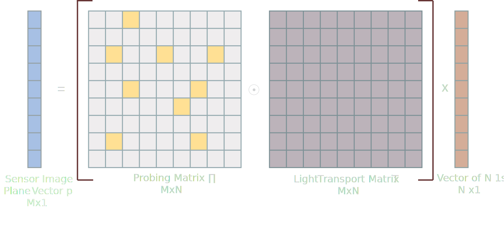

Physically Based Renderer for simulation of modern imaging

Background GitHub
Over the past two decades, computational photography research has resulted in the emergence of many new imaging modalitties: From cameras that can record video
at trillion frames per second, to cameras that can see around corners or through tissue, and to cameras that can optically separate unscattered from scattered light.
Unfortunately, computer graphics has not kept up: Even though nowadays we have access to high-performance and fully physically-accurate rendering engines for
simulating images captured by regular cameras, access to similar tools for these emerging types of cameras is still scarce or non-existent.
This greatly hinders computational photography research, making it difficult to perform simulated experiments or investigate imaging design considerations.
The purpose of this project is to develop software tools to alleviate these issues. The focus of the project is expanding an existing physicallly-accurate(Mitsuba) to
enable it to simulate various modern types of imaging, including: structured light, epipolar imaging, transient imaging, speckle imaging, and light transport probing.
Current State of Research
Currently, the expanded physically based renderer for simulation of computationa imaging, Mitsuba_clt, can achieve simulation of camera system that separates scattered and unscatterd light, row, column and identity light transport probing. Specifically, to enable simulation of these two kinds, following features/plugins have been added to Mitsuba.
Plugins for Coded Camera and Structured Light
Plugins for Light Transport Probing
Plugins for Coded Camera and Structured Light
Perspective Projector
perspective projection over refractive material
perspective projection over diffuse material
Perspective projector plugin takes in an image/texture and other basic information like its position, orientation and focus distance in the scene. The brightness of the projector can also be adjusted by its 'scale' parameter. It uses perspective projection to cast specified images onto virtual objects in the scene. To decrease the variance, the projector makes use of importance sampling so that rays with directions of larger radiance are more likely to be sampled from this light source.
Orthographic Projector
orthographic projection over refractive material
orthographic projection over diffuse material
Similarly, orthographic projector plugin takes in an image/texture and other basic information like its position, orientation and focus distance in the scene. The brightness of the projector can also be adjusted by its 'irradiance' parameter. It uses orthographic projection(parallel projection) to cast specified images onto virtual objects in the scene. To decrease the variance, the projector makes use of importance sampling so that positions of larger irradiance are more likely to be sampled from this light source.
Coded Perspective Camera
perspective camera with stripe mask
The coded perspective camera takes in a texture as a filter to be applied to the rendered image. The advantage of loading the filter directly into the rendering process instead of post-processing is to improve the sampling efficiency by using importance sampling with the loaded filter.
Coded Orthographic Camera
orthographic camera with stripe mask
The coded orthographic camera is similar to the coded perspective camera, since they both apply a filter to the camera in rendering process. Both of them makes use of importance sampling. The only difference is that orthographic camera uses orthographic projection while the perspective camera uses perspective projection.
Primal Dual Coding to Probe Light Transport
Theory
A widespread assumption of the relationship between light sources and camera is the light transport equation: P = T i
where P is the image received by camera (a vector of pixels of the image), T is the light transport matrix inherently
encodes the scene's interaction with the camera and project and i is the light sources' representation vector.
Based on this assumption, we can develop the Transport Probing Equation:
P = (Π · T) x i
as mentioned in O'Toole's 2012 paper Primal-Dual Coding to Probe Light Transport. Specifically, a probing matrix Π is added to the light transport equation to achieve control of the image acquisition process. In the rendering, this probing matrix applied to the transport matrix can be achieved by modulated light source (in our case, perspective projector) and coding of the camera. Below are three plugins developed to achieve three kinds of basic probing matrix: "idenity probing matrix", "row probing matrix" and "column probing matrix". We will describe in detail the functionality of each probing matrix in their own section and show their demo images under the same scene configuration in which rectified perspective projector and camera pair are facing towards two walls in 90 perpendicular to each other.
A Corner Under White Illumination
A Corner with Identity Probing
A Corner with Row Probing
A Corner with Disparity Column Probing
Identity Probing
Cornell Box under White Illumination
Cornell Box With Identity Probing
Identity Probing names after its probing matrix which is an identity matrix. To achieve this probing matrix in the rendering, we use bidrectional path tracing and only sample light paths that start from and end with the same pixel location on the projector and the camera. This technique can help eliminate most indirect light paths in the scene. Therefore by looking at the demo image, you can tell most of the global illumniation in between the two walls has been eliminated.
Row Probing
Cornell Box under White Illumination
Cornell Box With Row Probing
Row Probing is named "row" to imply the sampling process of the projector. Specifically, for each light path starting from (x,y) pixel position on the camera, we only sample from pixels from the same row y on the projector side. This technique has different effect under different spatial relation between the projector and the camera. When placed the projector and the camera are a rectified pair and their row's axis is parallel to displacement vector from the camera center to the projector center, the probing technique would have a similar functionality as the identity matrix: eliminate most indirect light paths in the scene. Therefore by looking at the demo images (either cornell box or the two wall scene), you can tell most of the global illumniation has been eliminated in the identity probing version. Column Probing would have similar effect if the camera and projector's column axis is parallel to displacement vector from camera center to the projector center.
Column Probing
Cornell Box under white Illumination
Cornell Box With Column Probing and disparity = 16
Column Probing is similar to row probing. The only difference is that in this rendering, for each light path starting from (x,y) pixel position on the camera, we only sample from pixels from the same row y on the projector side. This technique also has different effect under different spatial relation between the projector and the camera. When placed the projector and the camera are a rectified pair and their column's axis is perpendicular to displacement vector from the camera center to the projector center, the probing technique would mostly only allow light paths getting reflected from certain depth of the scene. Specifically, this depth is controlled by the disparity of the stereo pair. Therefore by looking at the demo images (either cornell box or the two wall scene), you can tell that probing with disparity only allow a slice of scene at certain depth to be lighten up. Row probing can also show only light from certain depth, if the camera and projector are placed so that thier row axis is perpendicular to the displacement vector from the camera center to the projector center.
Simulation 1: Separation of direct and indirect light
With the extended plugins, we can simulate the imaging that separates direct and indirect light with epipolar probing or primal dual probing mentioned in the paper Primal-dual coding to probe light transport. Specifically, by masking both camera and projector in the scene with specified light tranport matrix, the technique allows us to acquire images that have specific light transport paths been blocked, attenuated or enhanced. In this example simulation, we use the technique to separate the direct and indirect light transport in the scene.

Full Illumination
Direct Illumination
Epipolar Probing
Direct Illumination Reconstruction with High Frequency Texture
Global Illumination Reconstruction with High Frequency Texture
Simulation 2: Light Curtain
With the extended plugins, we can also show light paths from certain depth of the scene. Specifically, we make use of column/row probing with disparity to render these images
Full Illumination
Column Probing with Disparity = 16
Column Probing with Dispairty = 23
Simulation 3: Seeing Through Fog
With the extended plugins, researchers can test out some imaging technique's performance of seeing through fog. In the demo rendering below, we construct a scene where a CMU scotty is hidden behind the homogenous fog. Then, we test out different imaging techniques' performance at achieving this task, including epipolar imaging, column probing with disparity and identity probing.
Full Illumination
Identity Probing
Epipolar Imaging
Column Probing with Dispairty
Poster
Below is the poster of the project presented at the See below the skin group 2019 annual meeting and below is the poster.